Published: 2023-10-05
Source link: https://www.cnphotos.net/academy/show-152.html
■ Subject | Xu Chongde
■ Reporter | Zhang Yue
■ Editor | Zhou Yimeng
■ Chief editor | Chen Xiaojun
The China Photos Top Ten Photographers award picks the best work of each year. It encourages and honors outstanding photographers who excel in artistic creation, sparks their drive, and brings out more work that speaks for the new era, shows the people's effort, lifts the national spirit, and cultivates noble feeling.
For the 2022 fifth Top Ten award, 191 features by 173 authors were published or submitted on the China Photos platform. After authors confirmed entry, works were ranked by reads, likes, and valid comments, and then judged for depth, art, and their value and spirit. Sixty-four photographers made the 2022 candidate list.
After a curated show, public voting, a final review by noted photographers and experts, and a public notice, the year's Top Ten photographers and nominees were chosen.
To show the masters' classic work and their creative journey, and to build a wider space for exchange, China Photos will interview this year's Top Ten photographers and tell the stories behind their work. A Top Ten album will be published later.
This issue: an interview with photographer Xu Chongde.
— Editor's note
Preface
Xu Chongde has photographed for forty years, worked as a news photographer for thirty, and studied photo theory for twenty. His photographic language and his thinking on theory are mature. Most questions that photographers face, he has already thought through. On his path of documentary work, he only needs to keep walking at his own pace, and future results are easy to foresee.
By character, Xu is strong-willed and even independent. He follows his own inner code, fears no power, and fears no hardship, so his story is full of twists. I do not think that easy, free style comes for free. It rests on his warm drive, his strong will, and his steady high output. What surprises me is that this sharp-edged senior is fair, humble, simple, and direct, always quick to respond, and easy to work with.
To keep a fresh, unworldly heart at any age is rare and admirable. It is the vitality of any artist. With a scholar's spirit he writes on, using news to push society and clear out the false, the bad, and the ugly. He walks on and shoots on, using photography to record culture and history and spread the true, the good, and the beautiful. He says his features take years to ripen, like old wine. So let us look forward to what this interview with Xu Chongde reveals.
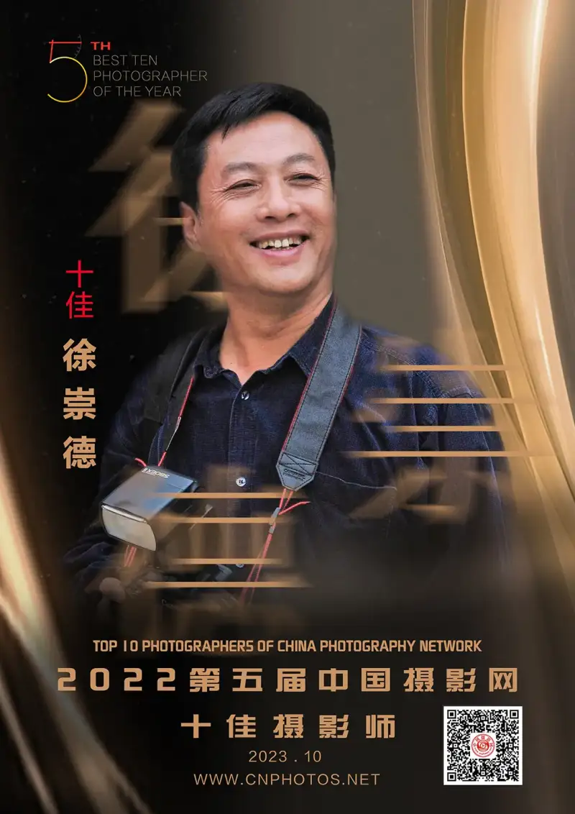
Xu Chongde, senior reporter, graduated in photography from Xiangtan Normal College and studied at the Fudan University journalism graduate program. He is a member of the China Photographers Association and the China News Photography Society, a signed photographer for China Photos, and a 2023 Top Ten photographer. He has written over 300,000 words of photo essays in newspapers and art magazines, given over fifty lectures at forums and universities, held solo shows across the country and joined over twenty group shows, and published books including Festival Qingdao, Olympic Qingdao, Qingdao on the Stone Steps, Qingdao Through an International Lens, Four Seasons of Songling, Epidemic Door Gods, and Wind From the Island.
Zhang Yue of China Photos (below, Zhang Yue): Are you a full-time news reporter?
Xu Chongde, China Photos Top Ten photographer (below, Xu Chongde): Yes, a full-time photojournalist. I started at a county party paper and worked my way up to a national news agency. Every step on this path was solid, and I achieved a fair amount in news photography.
Zhang Yue: Can you outline the key points of your career, with examples?
Xu Chongde: When I was young I worked in art as a graphic designer and held a solo painting show at the Shandong Art Museum. Had I stayed on that path, I cannot claim great things, but I might have become known.
Just as I had a small success in art, a local paper held open exams for reporters. I placed first in photography and became a staff photojournalist. Later I moved to the Qingdao Daily, and then China News Agency hired me as a staff photojournalist and picture editor for its Qingdao branch. I gladly gave up the art I loved and became a photojournalist.
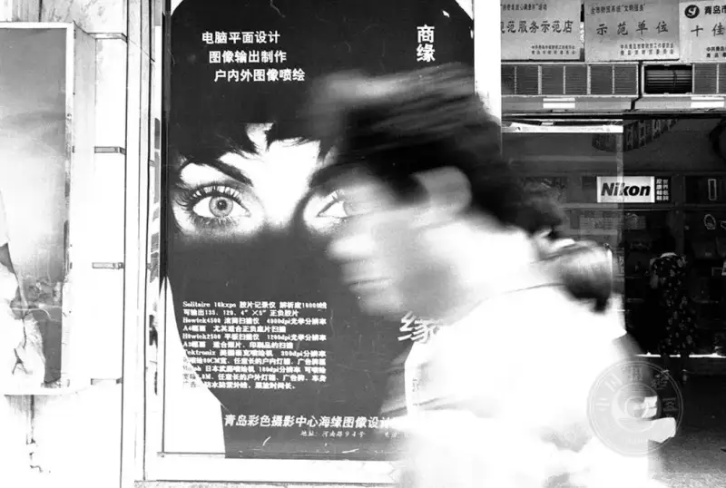
“Eyes”
Shot on September 29, 1997,
Zhongshan Road, Qingdao.
Zhang Yue: How would you describe your character? How does it affect your news work?
Xu Chongde: I am serious, tough, and not afraid of hardship. At the county paper, I once placed six news photos a week in People's Daily. At China News Agency, four text reporters at the Qingdao branch scored 20 points a month together, while I alone scored 39.5, doing the work of eight. Photojournalists also run to the scene every day, so the conditions and the load are heavy. During the pandemic, to shoot volunteers at checkpoints, I feared taking buses or taxis, so I mostly walked. I walked 3 to 4 hours a day, about 15 to 20 km, and over 30 days shot more than 200 volunteer posts, about 500 km on foot. Jia Xiaoxia of People's Photography once interviewed me and wrote an article called The Daredevil on the Photo Front, published in People's Photography.
I am also blunt and stubborn. I do not beat around the bush, I do not flatter anyone, and I do not look down on anyone. All people are equal. I am independent, free, and I respect my bosses but do not curry favor. That is my code.
Life works this way. Some parts are set at birth, tied to character, and cannot change. Other parts come from culture, tied to your learning, knowledge, and outlook, and you can change or choose those.
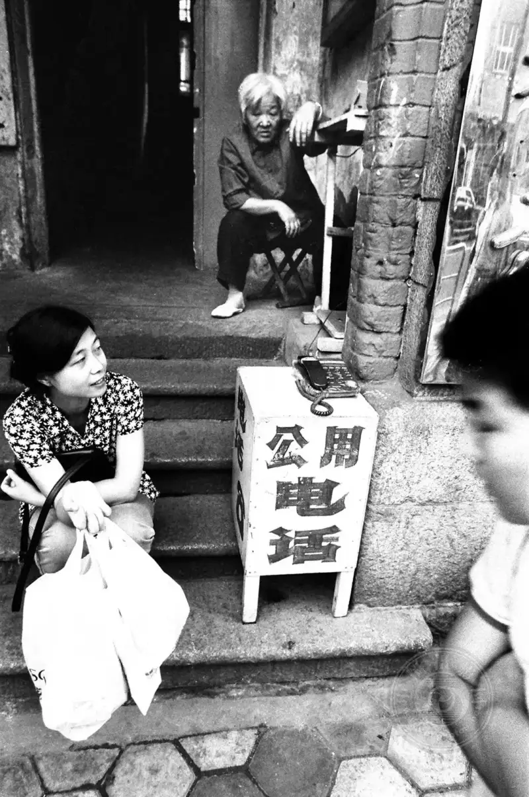
“Pay Phone”
Shot on October 3, 1997,
Zhongshan Road, Qingdao.
Zhang Yue: As a journalist with a news ideal, I see clear traits in you: curiosity, a sense of adventure, the pursuit of truth, speaking out for others, and breaking the rules?
Xu Chongde: Yes. Some things are inborn, like curiosity and a sense of adventure. The pursuit of truth, speaking out, and breaking rules are learned, and they come from the nature of the work.
During the 1997 crime crackdown, I went with police to arrest a suspect with a gun. Four officers checked four rooms several times and found nothing. As we were about to leave, the officer at the back noticed a TV box in a corner by the door. He lifted it, and there was a shout. I saw a naked man curled up inside. In close quarters I reacted at once, threw myself on him, and pinned his hands so he could not raise the gun. As I grappled with him, more officers rushed in and held the naked suspect down.
Another time I went with police to raid an illegal restaurant. A tall suspect climbed a wall and fled in the confusion. Three officers and I chased him for over a kilometer without catching him. I ran back to the restaurant, had the driver take me after him, and the car broke down at a field ridge. At that moment I jumped out with my camera and chased the man alone. When I closed in, I cut in front of him, kicked him hard, and he went down. I threw myself on him and struck his head twice with my camera until he was dazed. When the officers arrived, I remembered my role, switched back to photographer, and shot as they cuffed him.
In news work I often broke the rules. A photojournalist must get to the scene and bring back photos from it. Often the official way did not work, so I had to find other ways, even ones people would not imagine. One that stands out is the Huangdao explosion ten years ago.
On November 22, 2012, a Sinopec oil pipeline exploded in Huangdao, Qingdao. The blast killed 62, put 136 in hospital, and caused 750 million yuan in direct loss. I reached Huangdao that afternoon. The local propaganda office blocked reporters, and only central media could enter. To the anger of the reporters, they held two days of press briefings while keeping us in the hotel and never taking us to the site.
On the night of November 22, I slipped out of the hotel, took a taxi alone to Zhaitangdao Street, and shot an explosion site guarded by armed police.
On the morning of November 24, in light rain and under strong pressure, the propaganda office took a small van with a few reporters to one blast site. I did not take out my camera. I hid my bag in my raincoat, slipped past the escorts, put up an umbrella to cover my face, turned a corner, and crouched among recovery workers. From a distance I saw the other reporters step in front of the van, snap a few frames, be pushed back on board, and driven off. Then I held the umbrella in one hand and the camera in the other, and kept shooting the rescue. After about half an hour, fearing they would seize the camera or delete the images, I took out the memory card, wrapped it in plastic, tied it to the umbrella frame, put in another card, and moved to the other side of the site. After another half hour, a man who looked like a leader came up and asked who I was and why I was shooting. I said I was a rescue-team photographer making records. He looked me over and said it was dangerous, another blast could happen, and I should leave. I agreed at once and left fast, because staying might have given me away.
Back at the hotel, I downloaded the photos and wrote the caption: On the morning of November 24, at the Sinopec pipeline blast site in Huangdao, Qingdao, police, firefighters, and company rescue workers search in the rain for the missing. Two bodies were found that morning, and by press time the blast had killed 50. Once both cards were downloaded, I picked a few rescue shots, added the caption, opened the China News Agency system, uploaded the photos, pasted the text, and hit send. Soon the photos were on the major news sites.
I believe all news must be objective, fair, accurate, and complete. As a national agency reporter in Qingdao, I cannot only praise the local government or echo local media. That would hurt the public's right to know and the credibility and authority of national media. I must report the positive and main story of Qingdao, but also reflect the new problems that come with growth, and report disasters and pollution honestly, so readers see a full and true Qingdao.
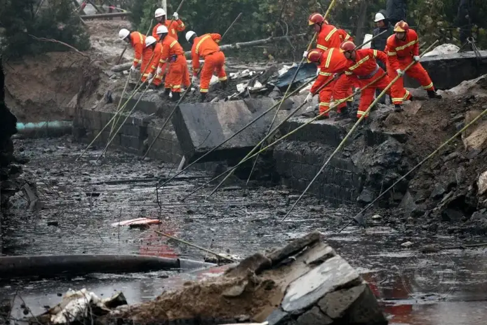
Morning of November 24, 2012,
At the pipeline blast site,
firefighters use bamboo poles to search the mud for victims.
Zhang Yue: How do you see the two roles of reporter and photographer together? Which matters more to you?
Xu Chongde: For news and documentary work, the two roles do not conflict. In theory they merge, and in action they support each other. For me, the reporter role is clearly more important, because it is my job and how I feed my family.
A photojournalist and an art photographer both record truth. The job of a news photo is to carry news, while the job of an art photo is to express thought and feeling.
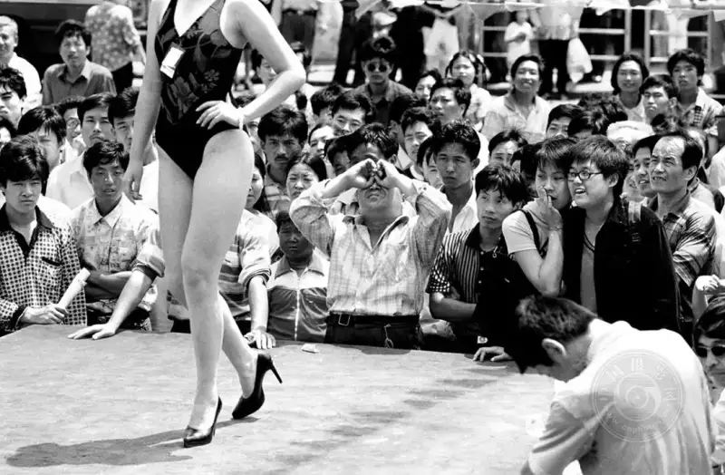
“Swimsuit Show”
Shot on August 6, 2001,
Zhongshan Road, Qingdao.
Zhang Yue: How do they differ? Can you explain from your own experience?
Xu Chongde:A photojournalist records with reason, focuses on visual information, and reproduces truth objectively. No personal feeling may enter, and the person or event must be shown as it is. An art photographer expresses with feeling, focuses on visual experience, and presents truth subjectively. The photographer may draw on the scene to pour in personal thought and feeling, set out an aesthetic ideal, and show an art style.
A news photo needs the five Ws in its caption, because the photo is evidence. A documentary work by an art photographer is conceptual. It also speaks through fact, but it is visual narrative rooted in literary thought, the result of the photographer's thinking about the world, society, and people.
A photojournalist needs a sharp news sense and judgment, plus talent, wisdom, effort, and courage. At a fast-moving scene, you must quickly find a thread, pick an angle, and catch a simple, strong news image out of the chaos.
For well-known reasons, most news photos are an assigned task, with deadlines and review. Both the frame and the caption carry unspoken limits. In other words, a news photo cannot be pure self-expression.
As an art photographer, I can take on private projects like documentary and art work. These have no deadline or review, are free of rules, and, shot over years, let me stress self-expression and build a clear personal style.
For me, I carry both roles when I shoot, and that gives my work an extra layer of meaning.
Zhang Yue: Your features focus on the coastal city of Qingdao, some spanning over thirty years. After twenty or thirty years of observation, has your shooting or presentation changed?
Xu Chongde: No change. In both news and documentary work, I always shoot candid and never stage a scene. I believe a staff photojournalist's skill shows in four ways: understanding of photography, insight at the scene, quick reaction, and visual expression. Insight and reaction both show through candid shooting.
Zhang Yue: You have published books on Qingdao such as Festival Qingdao and others. What is your main impression of the city? After so many features on one city, do you grow tired of it?
Xu Chongde: I love Qingdao, because there is too much to shoot. In modern times it was a migrant city where outside and local culture mixed, giving its people a broad, open mind. The mix of tradition and modern coastal culture makes the city open and driven. Qingdao people built global brands like Haier, Hisense, and Tsingtao Beer, and turned sugar balls, radishes, yangge dance, and beer into distinctive festivals. For a city with such a clear character, only the most direct tool, photography, can show both its historical weight and its modern energy.
Now I avoid what others have shot to death and keep working on a few Qingdao features, hoping to make them finer and more complete.
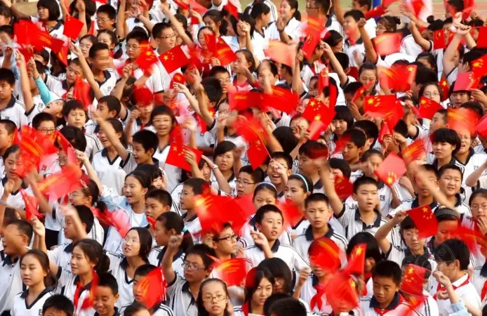
Shot on September 30, 2009,
Qingdao No. 39 Middle School.
Three thousand teachers and students wave three thousand national flags,
wishing the motherland well.
Zhang Yue: How long do your features usually run? What do you think of showing time and space in a feature?
Xu Chongde: Besides those, I have other Qingdao features, such as Five-Star Red Flag, I Am Proud of You, Qingdao on the Stone Steps, Qingdao Facekini, and Zhejiang Road: Keeping Happy Memories. All have run in photo press. The longest, Five-Star Red Flag, has run 33 years. The shortest, Qingdao Facekini, has run 8 years. Qingdao on the Stone Steps has run 11 years, and they continue.
These features show, across time and space, the real lives and human feeling of people in a certain period and area of Qingdao, and they carry my varied understanding of the city. A feature is like old wine, better with age. Years from now, what will touch people most is what time and space reveal: the historical traces left in this century-old city and the spirit passed down through the times. That is the unique power of a feature, and why I keep shooting them.
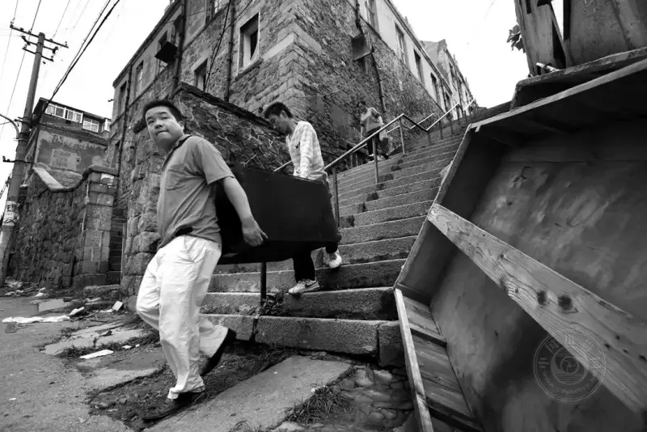
“The Move”
Shot on July 12, 2009,
Stone Steps Road at Yucheng Road.
Zhang Yue: You shot the epidemic feature Door Gods. Was shooting harder during the pandemic, and what challenges did you face?
Xu Chongde: After the outbreak, I did not stay home. I kept going out every day. I saw busy shopping streets, buses, and subways empty. I felt the fear of death and a grief too deep for tears. To face the sudden pandemic, it would be false to say I was not worried or afraid.
The hardest part was the strict controls. Once, at a checkpoint on Songjiang Road in Shibei District, Qingdao, I raised my camera and a woman shouted: No photos! I said I was a reporter on a normal assignment. She said: A reporter, even less allowed! I left. As I crossed Dandong Road and reached Nenjiang Road, the same woman ran after me. She said she had chased me for blocks. She checked my ID and press card, took my number, and told me that during the pandemic anyone who photographed must first register, report to the authorities, and get approval.
There were many such cases, almost daily. In Shanghai it was the same. Sometimes I said I was a hobbyist taking pictures for fun. Sometimes I argued with people who set out to obstruct me. Sometimes they seized my press card or ID, and I called 110. Whatever the force or the unreasonableness, I found a way through. That is a reporter's duty and mission.
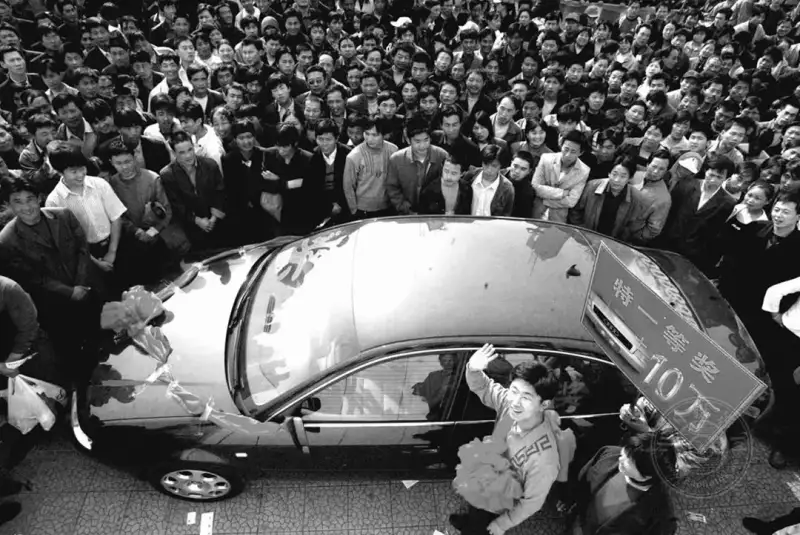
“The Big Prize”
Shot on April 16, 2004,
Hong Kong Middle Road, Qingdao.
Zhang Yue: You have a strong theory base and over 300,000 words of essays. How do you understand documentary photography, a term people use but often misread?
Xu Chongde: First, the word documentary. It traces back to the English non-fiction, meaning not made up. In the Western tradition, literature splits into fiction and non-fiction. Fiction is novels, plays, and poems. Non-fiction covers everything else: essays, notes, diaries, biographies.
Because the translations differ and translators understand the term differently, several versions exist in China, and a wrong translation is possible. The phrase visual impact is another example.
Documentary photography draws on real life. Its aim is to record real life, show a true world, draw attention, awaken a social conscience, and record a culture as a historical gift. Early work focused on daily life, but after 1900 it turned to social issues and produced many works about real society, with broad effect on progress. In this sense, documentary has the value of recording and preserving history, and a unique role as a witness and agent of change.
Documentary has been known in China for decades, yet some still read it narrowly. They say only Xie Hailong's Hope Project, Lu Guang's pollution, and Wang Jiuliang's dumps count as real documentary, and nothing else. In fact, documentary is broad. In a wide sense it has three kinds: social documentary (reportage), cultural record (archive), and humanistic documentary (diary). Xie Hailong's Hope Project is social, Chen Jin's Sichuan Teahouse is cultural record, and Wang Fuchun's Chinese on the Train is humanistic.
The American documentary photographer Dorothea Lange said documentary shows the relations between people, and between people and nature; it records human activity; it depicts the customs and institutions of social life; and it reveals the ways of life that shape human behavior. In other words, its main subject is people, and its aim is to reveal the ways of life that shape behavior. Documentary uses photography's most basic power as a social voice, engages society directly, exposes and criticizes problems, and changes reality.
Whether the work shows the good or exposes the ugly, the photographer must carry a strong social responsibility and mission, act with humanity and kindness, and with great resolve go deep into real life. You must truly understand and respect your subjects, not invent, not embellish, not exaggerate, and use candid shooting to show society as it is.
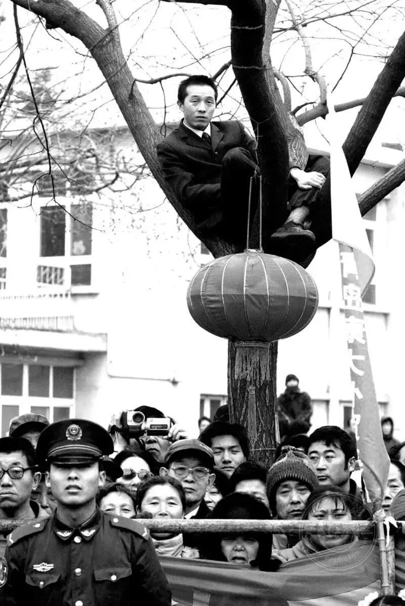
“The Audience”
Shot on February 24, 2005,
Xinglong Road, Qingdao.
Zhang Yue: You mentioned that visual impact is often misread in China. Can you explain?
Xu Chongde: On the wrong term visual impact: over ten years ago I read a post online: I heard a lecture by a photo master, and the only word all talk was visual impact. A teacher next to me joked: What is visual impact? I do not know which Western term it maps to, but the master kept using it. Maybe I just do not get it. After reading that, I doubted the term. I looked into it and found it came from mistranslation and misunderstanding. I then wrote Twenty Years of Visual Impact: On the Effect of Visual Impact on Chinese News Photography, published in China Photonews on September 17, 2010.
When did it enter China? Records suggest the 1988 Beijing International News Photography Week. In talks between Chinese and foreign photographers, the phrase Visual Impact came up, and someone rendered it simply as visual impact. Unexpectedly, this loose translation spread as a trendy term. Over the next twenty years it mutated into image distortion, visual tension, and visual impact, and the wrong reading spread for two decades in Chinese news photography.
It is a loan word. The English is Visual Impact, a compound of visual and impact. Many translate visual as sight and impact as shock, giving visual shock. But impact means more than shock. It also means influence and effect. Rendering it as visual shock is the most common translation, but in art and imaging, visual appeal or visual expressiveness would carry the meaning better and sound more natural.
What is visual impact, really? There is still no agreed answer in Chinese news photography, and debate is fierce. The noted editor and photographer Zeng Huang argues that visual impact misled Chinese photographers, limited their imagination, and pushed them to use wide-angle distortion on purpose. My own view is that it damages the basic character of a news image and misleads the audience's taste, against the truth principle of news photography. Academically, it does not help photojournalists build their visual skills, and it harms the healthy growth of Chinese news photography.
Visual impact has been in China for thirty years and has done some harm. It is time to set the record straight and render Visual Impact as visual effect, visual influence, visual appeal, or visual expressiveness, and stop passing on the wrong meaning. We should read the term correctly, reflect on its harm, guide the academic study of news photography, and help Chinese news photography grow in a healthy way.
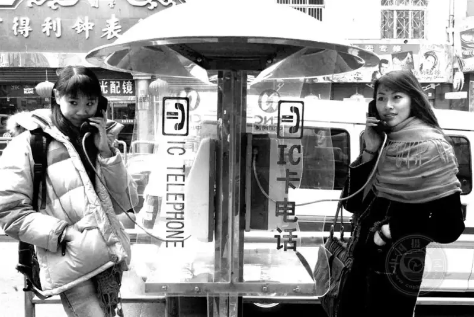
“IC Card Phone”
Shot on January 14, 2004,
Zhongshan Road, Qingdao.
Zhang Yue: Many people shoot documentary in China, but few make strong work. Why do you think that is?
Xu Chongde:Let me tell you a short story.
The year before last, a college friend sent me a set of documentary photos. A noted local photographer had shot his own courtyard for years and planned to enter a contest, and he wanted my read first.
At a glance I saw the problem. I called my friend: I will skip the strengths and talk about the flaws. He had shot for years, so why is there no spring, summer, autumn, or winter? In the south trees do not lose leaves, but people's clothes must change. He grew up in the courtyard, so after all these years, where are births, old age, weddings, and funerals? Time leaves traces, and neighbors have small frictions that tell a story. In short, the time span was short and the seasons did not change. That is the time problem.
Also, after so many years, he should have shot outsiders entering the courtyard: paperboys, couriers, water delivery. And he should have shot residents leaving: a child on the first day of school, a young person on the first day of work waiting for the bus, elders and the disabled going to community events. These are ways to expand the space of a feature. In any feature, time and space are the core. The longer the time span, the heavier the history. The wider the space, the deeper the culture.
After I said this, my friend had nothing to add.
I added: tell the photographer not to give up. Follow these points, keep shooting until the old city is rebuilt and the courtyard is torn down, and then show the work. That may sound harsh, but at least the changes of time should show.
The flaw in that set is a common reason China lacks high-level documentary. Many photographers ignore time and space. They do not spend the time, the patience, or the effort to make a feature properly. For photographers at large, how to understand time and space, grasp them as the soul, and apply them in practice is a widespread problem that needs real attention.
Zhang Yue: You also shoot folk customs, such as the Tianheng Sea Festival. What do you think of folk photography today?
Xu Chongde: Folk photography has even more problems. For twenty years it has boomed across China, and photographers crowd every folk event. It is now the second biggest subject after landscape, and a wave of mass folk image-making has grown. Behind the apparent boom is a set of problems. Some photographers stay on the surface and do not dig into the symbols that best represent Chinese folk culture. Others join so-called folk photo tours and shoot fake folk customs just for a pretty frame. Fake folk culture spreads, and fake folk photography spreads with it, growing worse.
Today's rough, error-ridden, mismatched fake folk photography speeds up the coarsening of the field and makes it shallow, thin, empty, silly, and vulgar. This wave of fakeness strikes folk culture itself, harms the purity of Chinese folk culture, erodes the national spirit, and directly threatens the proper passing on of fine tradition.
Decades of practice show that truly skilled folk photographers are rare, and strong folk features are rarer still. The real cause is the spread of fake folk culture, and of fake folk photography. In a profit-driven world, many photographers do not put in the work. They chase quick gain, join photo tours, rush to minority festivals in a herd, and hunt for the exotic without thinking. They see only the surface beauty of tradition, cannot grasp its inner depth, and cannot feel its art. So they imitate the lighting of fake folk shots on purpose and repeat surface elements on a line, producing work that is commercial, false, superficial, and fragmented.
The root cause is clear. Images that go against the natural order and damage folk culture bring only false fame and short-term gain. Many photographers stop at festivals, weddings, and funerals and do not dig into the inner spirit of folk culture. I hope responsible photographers go into real life, move from the surface to the inner fabric, and use honest methods to seek the human roots of fine Chinese tradition, leaving a spiritual gift for the future.
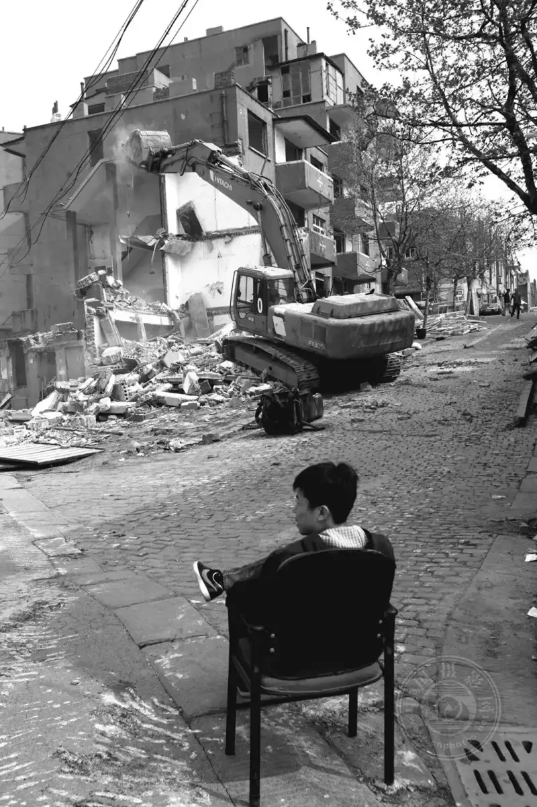
“Demolition”
Shot on May 9, 2010,
Cangkou Road, Qingdao.
Zhang Yue: In nearly thirty years of news work, you must have done something good for society with photography. What do you think was your most successful act?
Xu Chongde: Using photography to lift up Songling Snow Village in Jilin is what I am most proud of.
In winter 2011, after an assignment in Songyuan, Jilin, the vice chairman of the Jilin Writers Association, Zhao Chunjiang, took me to Songling Snow Village in Pearl Village, Linjiang. Few outsiders went there then. The snow was over half a meter deep, and locals stayed home for the winter. At minus forty, I lost interest in landscape work and walked down the slope alone to shelter in the village. I knocked on a door and said, shivering: I am a reporter shooting here and I am freezing. May I warm up for a while? Maybe my Shandong accent helped. A man in his sixties opened the door, sat me on the warm kang, and his wife brought hot water and pancakes, saying: I have not cooked breakfast yet. Drink hot water first and eat a pancake.
On the warm kang, I learned that Songling was a migrant village and, by chance, a Shandong settlement. Before I left, I offered ten yuan for the pancakes and water. He pushed it back: A few pancakes are nothing. You come from our old home in Shandong. How could I take your money?
I was moved by the natural beauty of Songling, and even more by the simple people. That made me want to keep shooting and to do something real for them.
Back in Qingdao, I edited the photos. Drawing on the story of Songling families who left Shandong for the northeast, I wrote a photo report called In Search of the Shandong Settlement and sent it to many outlets. It caused a stir, especially in photo circles. I then shot Songling in every season to drive year-round tourism, added text on its history and culture, and even self-published the book Four Seasons of Songling to raise the village's name.
In May 2016, on my way to a meeting in Liaoning, I visited Songling again. The village chief said happily: Your report worked. Winter tourism is taking off. Over 80 households now run guesthouses. Last winter we had up to 4,800 visitors in a day. The mountain was full of people.
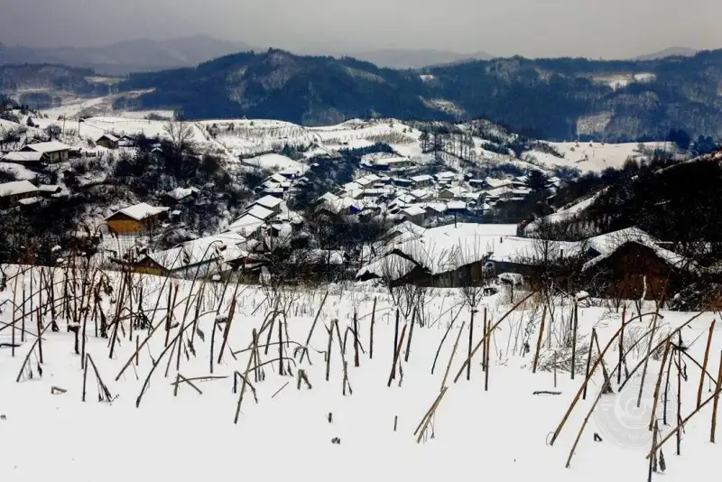
Shot on December 26, 2011.
Songling, wrapped in snow,
shows the grand northern landscape.
I cannot measure the power of news, but this was a surprise I never expected. Songling has become a paradise for photographers and tourists nationwide. People who once farmed and gathered mountain goods now run guesthouses or cook for farm diners, and their lives have moved out of poverty. The deep change in Songling is directly tied to my years of shooting, reporting, and promoting it.
Using photography as the starting push to lift a remote village out of poverty is a small example of how a photojournalist can take part in life and move society forward, and it is my most successful case.
Zhang Yue: Finally, what advice do you have for photography enthusiasts?
Xu Chongde: Photography need not be art, but it cannot be without culture. More important than art is record. More important than record is observation and thought.
Zhang Yue: Thank you for the interview!
Zhang Yue
Reporter for China Photos.
Post-90s woman, writes in Chinese, based in Beijing.
Has published hundreds of thousands of words of arts criticism and political commentary.
Now a master's student in photography and digital media at the Chinese National Academy of Arts.
Fond of documentary photography.